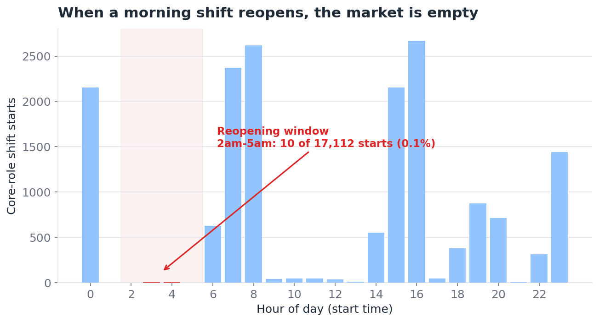

London-based junior analyst portfolio
Matt Yu
Data analyst
turning messy commercial data into decisions people can act on.
I'm a Business Management graduate based in London, building practical data projects across SQL, Excel, Power Query and Power BI. My work focuses on cleaning data, identifying trends, building dashboards and turning analysis into clear recommendations for business, customer and operational decisions.
Open to junior analyst roles across insight, marketing, commercial and operations teams.
- 6
- portfolio case studies
- 2 yrs
- commercial data explored
- SQL + BI
- analysis toolkit
About
Business background with practical analytics projects.
I have a Business Management background and hands-on analytics experience through portfolio projects using SQL, Excel, Power Query and Power BI. I'm interested in e-commerce performance, customer behaviour, dashboard design, commercial insight and how clear analysis can support better business decision-making.
Skills
Analytical skills grouped around practical business work.
Tools
Dashboarding
Business Insight
Case Studies
Selected case studies, from problem to recommendation.

Case Study
Marketplace Reliability: Solving Late Shift Cancellations
Problem
A two-sided staffing marketplace loses site trust when last-minute shift cancellations cannot be refilled in time. The task was to find out why some cancellations get recovered and others do not, and turn it into a fix an executive could act on.
Dataset
Around 146,000 shift, booking and cancellation records from a single regional market (2021). Raw data is proprietary and withheld; the repo ships the anonymised report and aggregated model.
Tools Used
Process
- Tiered every cancellation by lead time to measure damage, not just volume
- Tested and rejected the intuitive "remove the repeat offenders" fix
- Segmented by role, price and time of day, controlling for severity
- Traced the failure to a morning shift reopening into an empty overnight market
Key Insights
- Recovery, not cancellation, is the real problem
- Damage concentrates in one worker role and one shift band
- Price is not the lever — recovery is flat across charge bands
Business Recommendations
Offer the unfilled morning shift to the on-site overnight worker at a premium, opt-in and triggered at the end of their shift — a costed, testable intervention worth under 1.2% of market revenue.
What I Learned
How to pick the right denominator, control for confounders, falsify an intuitive hypothesis, and size an intervention with guardrails and explicit kill criteria.

Case Study
E-commerce Customer & Sales Analysis
Problem
The business needed to know which customers actually drive revenue, and why others stop buying, so retention and marketing effort could be focused where it pays off.
Dataset
Two years of transactional e-commerce data covering orders, customers and revenue.
Tools Used
Process
- Cleaned and prepared the raw transaction data
- Wrote SQL to calculate lifetime value, repeat rate and churn
- Segmented customers by value and visualised revenue contribution in Excel
Key Insights
- Segmented customers by lifetime value
- Identified high-value customers driving most revenue
- Analysed churn and repeat purchase behaviour
Business Recommendations
Prioritise retention and upselling for high-value segments, and target re-engagement at customers showing early churn signals.
What I Learned
How to turn raw transactional data into meaningful customer segments and translate SQL output into commercial recommendations.

Case Study
E-commerce Customer Behaviour Analysis with Python
Problem
Understand what drives sales performance, and how customer behaviour and category mix affect revenue across the year.
Dataset
A synthetic e-commerce dataset of 34,500 transaction records.
Tools Used
Process
- Cleaned and prepared the data in Pandas
- Engineered customer and category-level metrics
- Visualised trends and comparisons with Matplotlib and Seaborn
Key Insights
- Cleaned and prepared 34,500 transaction records for analysis
- Compared one-time and repeat customers to understand revenue contribution
- Analysed category revenue, profit margin, return rates and monthly trends
Business Recommendations
Focus on nurturing repeat customers and the strongest categories, and review categories with high return rates that erode margin.
What I Learned
Strengthened my Python data-wrangling and visualisation skills, and how to structure an analysis end-to-end.

Case Study
Excel Superstore Sales Dashboard
Problem
Sales data sat in raw tables, making it hard to see what was actually profitable and how discounting was affecting margin.
Dataset
The Superstore retail sales dataset covering orders, products, regions and profit.
Tools Used
Process
- Cleaned and structured the raw sales data
- Built PivotTables and formulas to summarise sales and profit
- Designed an interactive dashboard with slicers and data validation
Key Insights
- Compared sales and profit trends
- Identified high and low-performing product categories
- Analysed how discounting affected profitability
Business Recommendations
Reduce heavy discounting on low-margin categories and concentrate effort on consistently profitable products and regions.
What I Learned
How to design a clear, interactive Excel dashboard and communicate profitability in a way stakeholders can act on.

Case Study
Power BI Superstore Sales Performance Dashboard
Problem
Spreadsheet-based reporting didn't scale and didn't allow fast, interactive review of sales and profit performance.
Dataset
The Superstore retail sales dataset covering sales, profit, discounts and regional performance.
Tools Used
Process
- Modelled the data with a dedicated date table
- Wrote DAX measures for sales, profit, margin and shipping
- Built KPI cards, slicers, drill-through pages and conditional formatting
Key Insights
- Built KPI cards and slicers so users could quickly review performance and filter the report.
- Created a date table and DAX measures for sales, profit, margin and shipping analysis.
- Added drill-through pages, tooltips and conditional formatting to make weak-margin areas easier to spot.
Business Recommendations
Use the dashboard for regular performance reviews and act on the weak-margin areas highlighted by conditional formatting.
What I Learned
Data modelling and DAX, and how to build a scalable, interactive BI report from spreadsheet data.

Case Study
Digital Transaction Fraud SQL Project
Problem
Identify the patterns that separate fraudulent transactions from legitimate ones, to support monitoring and prioritise investigation.
Dataset
A digital transaction dataset with payment channel, device type and behavioural fields.
Tools Used
Process
- Explored and aggregated transactions in SQL
- Compared fraud rates by payment channel and device type
- Analysed transaction velocity across legitimate and fraudulent activity
Key Insights
- Analysed fraud by payment channel and device type
- Identified customers and merchants linked to higher fraud activity
- Compared transaction velocity between legitimate and fraudulent activity
Business Recommendations
Prioritise monitoring on the highest-risk channels and devices, and flag high-velocity accounts for review.
What I Learned
How to use SQL for risk analysis and pattern detection, and how to frame findings for a fraud-monitoring audience.

Case Study
London Housing Market Analysis
Problem
Understand housing affordability across London and what drives property value from borough to borough.
Dataset
London housing data covering property prices, salaries, crime and housing demand by borough.
Tools Used
Process
- Imported and cleaned the data with Power Query
- Modelled the relationships with Power Pivot
- Visualised prices, affordability and crime trends
Key Insights
- Compared property prices against salary trends
- Analysed housing affordability by borough
- Explored the relationship between crime and property value
Business Recommendations
Highlight the boroughs offering the best affordability and factor crime levels into value assessments for buyers and investors.
What I Learned
Power Query and Power Pivot for larger datasets, and how to present complex market data in a clear, decision-ready format.
Experience
Customer-facing and operations experience with analytical habits.
Warehouse Staff & Front of House
- Tracked stock, reservations, orders and service activity using Excel
- Reviewed sales patterns to support operational decision-making
- Identified customer demand trends during busy service periods
- Communicated updates clearly across fast-paced team environments
Customer Support Specialist
- Maintained accurate booking records and customer documentation
- Reviewed customer feedback to identify service trends
- Supported daily reporting on guest issues and activity
- Communicated findings clearly across internal departments
Volunteering Experience
Additional experience supporting analysis, events and communication.
E-commerce Marketing & Data Support
- Analysed Amazon sales, advertising and customer feedback data
- Supported product launch insight, listing optimisation and keyword review
- Identified customer segments, conversion issues and pricing opportunities
- Presented findings to improve product performance and campaign decisions
CG Representative & Dance Director
- Organised event schedules, attendance records and logistics
- Coordinated communication with students, staff and external groups
- Maintained planning documents and stakeholder follow-up
- Supported society activities, rehearsals and event delivery
Currently Learning
Areas I'm actively building.
Python for data analysis
Dashboard storytelling
AI prompting for analysis workflows
Codex and automation for productivity